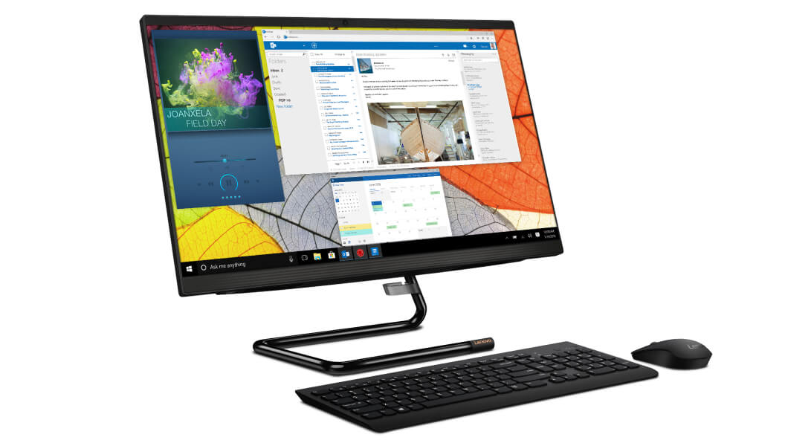
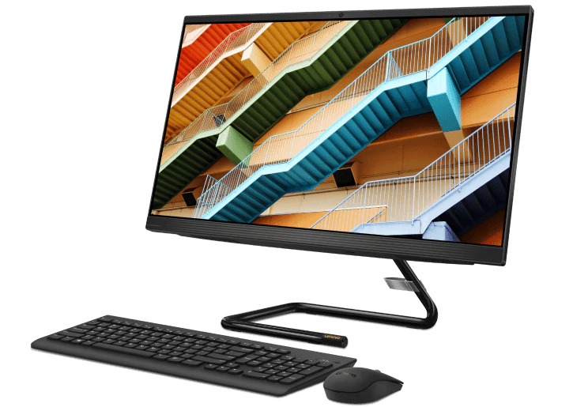
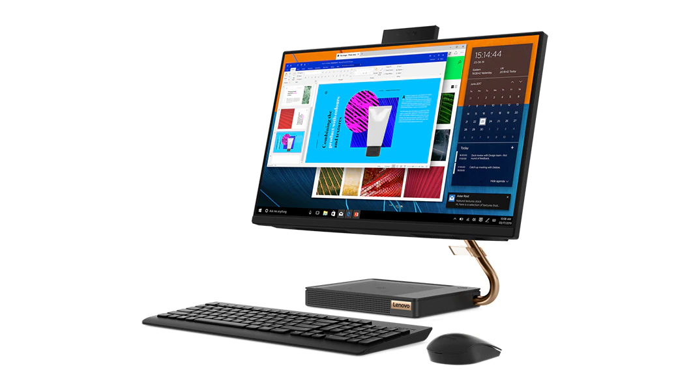

La tecnología se refiere a la colección de herramientas que hacen más fácil usar, crear, administrar e intercambiar información. En el inicio de los tiempos, los seres humanos hacían uso de ella para el proceso de descubrimiento del mundo y evolución. La tecnología es el conocimiento y la utilización de herramientas, técnicas y sistemas con el fin de servir a un propósito más grande como la resolución de problemas o hacer la vida más fácil y mejor.
"La innovación distingue a los líderes de los seguidores"
3i AIO (23.8", Intel) |
IdeaCentre 3i AIO (27", Intel) |
IdeaCentre A540 (23.8", AMD) |
|---|---|---|
|
|
|